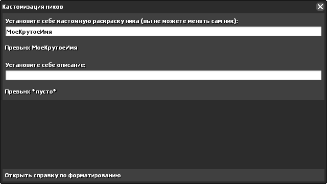
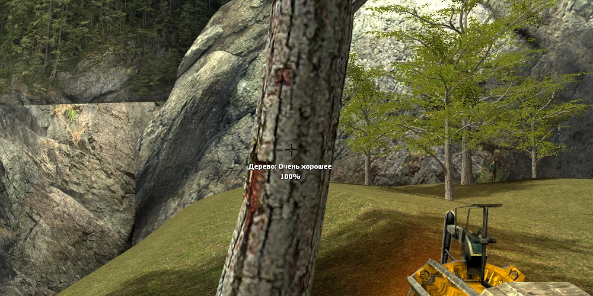
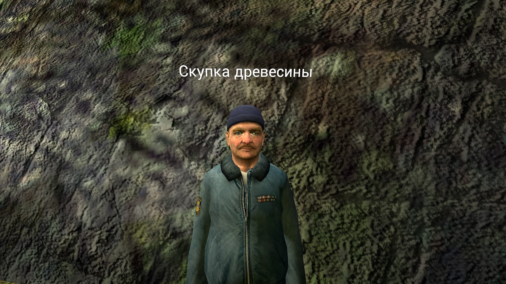

Вики сервера
Добро пожаловать на вики! Она предназначена для введения новчков в курс дела и для документации функционала сервера Если вы хотите предложить что-то для вики, то можете написать об этом в #предложения на Discord сервере
Общая информация:
На сервере присутствует несколько систем которые могут потребовать объяснений, тут все это будет объяснено
Настройки:
Открываются на F2, в них будут все основные настройки сервера Все интуитивно понятно, единственное что может потребовать дополнительных объяснений, это кастомизация ников
В меню кастомизации ников вы можете установить себе кастомную раскраску ника или кастомное описание. За любое из этих действий вы также получите достижение "Дизайнер" Кастомизация также поддерживает форматирование. Если вы не знаете как его указывать, то можете нажать кнопку "Открыть справку по форматированию" в которой будут примеры форматирования и его использования Вы не можете устанавливать себе никнейм отличающийся от текущего! К примеру "<flash>МоеКрутоеИмя</flash>" будет работать, но не "МоеКрутоеИмя2"! Также при изменении никнейма в Steam, его кастомизация сбросится
Магазин:
Открывается на F3, в нем вы можете покупать SWEP-ы, постоянные бонусы и временные баффы
Как зарабатывать поинты?:
На каждой карте есть зона с деревьями. Занимаясь их рубкой, вы получаете древисину которую можете продать скупщику за поинты
Каждое дерево имеет свое качество. От качества зависит прочность, размер и количество древисины с дерева
Скупщик находится всегда неподалеку от зоны с деревьями, или непосредственно в ней. Нажав E, вы продадите ему древесину При продаже 50кг древесины, вы получаете бонусные поинты
Таблица лидеров:
Открывается на F4, в ней есть несколько таблиц лидеров Данные таблицы обновляются в реальном времени, так-что если вы хотите стать в чем-то известным, то таблица лидеров ваш выбор
Достижения:
Открываются на F6, в них вы сможете увидеть свой прогресс достижейний и их описание
Документация кастомных E2/Starfall функций
E2:
Функции:
| Название: | Описание: |
|---|---|
| e:getBadgeProgress | Возвращает прогресс достижения игрока |
| e:getDescription | Возвращает описание игрока |
| e:getPoints | Возвращает количество поинтов игрока |
| e:getTimePlayed | Возвращает наигранное игроком время в секундах |
| e:getTotalKills | Возвращает общее число убийств игрока из таблицы лидеров |
| e:hasBadge | Возвращает 1 если у игрока есть указанное достижение, 0 если нет |
| e:hasShopItem | Возвращает 1 если у игрока есть предмет из магазина, 0 если нет |
| e:isBUILD | Возвращает 1 если игрок в билд-моде, 0 если нет |
| e:isInCombat | Возвращает 1 если игрок находится в активном ПВП, 0 если нет |
| e:isInSafezone | Возвращает 1 если игрок находится в сейфзоне, 0 если нет |
| e:isPVP | Возвращает 1 если игрок в ПВП моде, 0 если нет |
| e:isSafezoneSafe | Возвращает 1 если игрок находится в сейфзоне и уже в безопасности, 0 если нет |
| e:sendPoints | Отправляет игроку указанное количество поинтов Для возможности отправки их через чипы, вы должны включить это через конвар classicbox_pointsfunctions |
Ивенты:
| Название: | Описание: |
|---|---|
| playerSendPoints | Вызывается каждый раз когда какой-либо игрок отправляет кому-то поинты |
Starfall:
Функции (Shared):
| Название: | Описание: |
|---|---|
| Player:getDescription | Возвращает описание игрока |
| Player:isInSafezone | Возвращает true если игрок находится в сейфзоне, false если нет |
| Player:isSafezoneSafe | Возвращает true если игрок находится в сейфзоне и уже в безопасности, false если нет |
| Player:getTimePlayed | Возвращает наигранное игроком время в секундах |
Функции (Server):
| Название: | Описание: |
|---|---|
| Player:getBadgeProgress | Возвращает прогресс достижения игрока |
| Player:getPoints | Возвращает количество поинтов игрока |
| Player:getTotalKills | Возвращает общее число убийств игрока из таблицы лидеров |
| Player:hasBadge | Возвращает true если у игрока есть указанное достижение, false если нет |
| Player:hasShopItem | Возвращает true если у игрока есть предмет из магазина, false если нет |
| Player:isInCombat | Возвращает true если игрок находится в активном ПВП, false если нет |
| Player:sendPoints | Отправляет игроку указанное количество поинтов Для возможности отправки их через чипы, вы должны включить это через конвар classicbox_pointsfunctions |
Хуки (Server):
| Название: | Описание: |
|---|---|
| PlayerSendPoints | Вызывается каждый раз когда какой-либо игрок отправляет кому-то поинты |